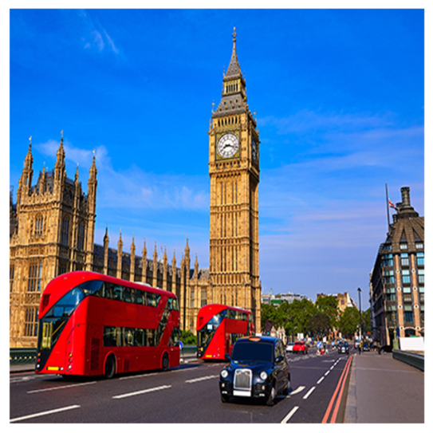
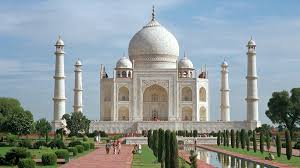

The places i have been to.

- China
- China as known as one of the longest history counties in the world, The Great Wall was built in Tung dynasty. it was built with the reason to prevent from invasion. which is considered as one of the most magnificient in any human history, nowadays this histrical spot is still proctected seriously in china.

- Japan
- Japan is best known as one of the best countries in the world, which is situated in East Asia, with alot of delicacies, and some of the most spectaular scenery, with early 10 million popluation in this country, which is a high popluated continent in the world.

- United Kingdom
- United Kingdom is best known as one of the oldest countries in the world, which is situated in South Europe, with alot of delicacies, and some of the most spectaular scenery, with early 7 million popluation in this country, which is a high popluated continent in the world.

- India
- India is best known as one of the enriches culture countries in the world, which is situated in South Asia, with alot of delicacies, and some of the most spectaular scenery, with early 13 billion popluation in this country, which is a high popluated continent in the world.

- Nepal
- Nepal is best known as one of the poorest countries in the world, which is situated in South Asia, with alot of religious background, and some of the most spectaular scenery, with early 3 million popluation in this country, which is a high popluated continent in the world.